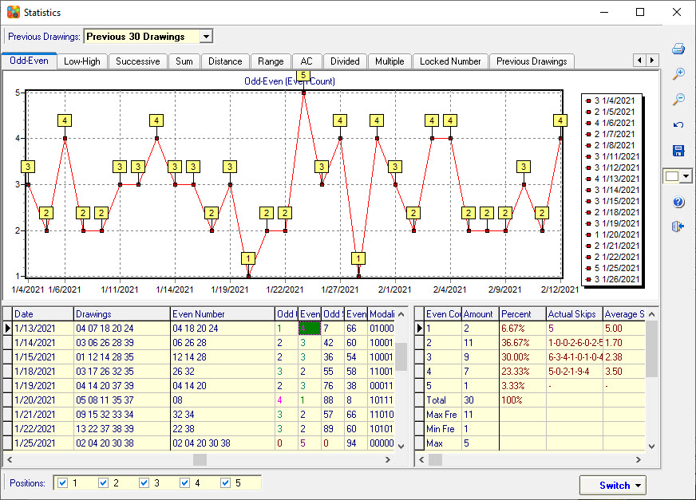

Odd-Even Analysis |
Click
menu->Statistics->Odd-Even to open the Odd-Even
analysis window.
Odd Number: List
all Odd numbers.
Even Number: List all Even
numbers.
Odd Count: Counting the number of Odd
numbers.
Even Count: Counting the number of Even
numbers.
Odd Sum: All Odd numbers added together. For
example, 05, 11, 14, 15, 22, 39, Odd is 05 11 15 39, Odd sum is 5+11+15+39=106,
so Odd Sum=70.
Even Sum: All Even numbers added together.
For example, 05, 11, 14, 15, 22, 39, Even is 14 22, Even sum is 14+22=36, so
Even Sum=36.
Modality: Show current number combination Odd
number and Even number pattern. The Odd number is marked by 1 and the Even
number is marked by 0.
For example, 02, 18, 19, 36, 41, Odd and Even
pattern is Even-Even-Odd-Even-Odd, so modality=00101.

Home
Page: http://www.samlotto.com
Support:support@samlotto.com
Copyright: © SamLotto Lottery Software
Team All rights reserved.